X511–X565¶
Centers on the Line at Infinity & Vector Directions
X511–X565 (Centers on the Line at Infinity & Vector Directions) — 16 representative centers (from 55 in collection) constructed on acute reference triangle \((a, b, c) = (5, 6, 7)\) with unit baseline AB = \(1\).¶
Group Preamble — Centers on the line at infinity: X511-X526
In barycentric coordinates, the line at infinity, L, is the set of points X =\(x : y : z\) satisfying \(x + y + z = 0\). The isogonal conjugate of L, given by a^2 y z + b^2 z x + c^2 x y = 0, is the circumcircle (e.g., X98-X112).
The collection of collinearities reported below for each of the centers on L comprises a family of parallel lines.
Barycentrics \(x: y : z\) (and trilinears) for X30, X511-X526, and many other triangle centers on L, are polynomials in (a,b,c). For example, barycentrics for X511 are \(p(a,b,c) : p(b,c,a) : p(c,a,b)\), where
p(a,b,c) = \(a^{2}(a^{2}b^{2} + a^{2}c^{2} - b^{4} - c^{4})\).
Such polynomials comprise a family that can be partitioned into two subfamilies: even and odd. Each subfamily can be generated as linear combination of polynomials in certain bases. For example, a basis for the even polynomials of degrees 1 to 4 follows:
A basis for the odd polynomials of degrees 1 to 2 follows:
X511ISOGONAL CONJUGATE OF X98
X512ISOGONAL CONJUGATE OF X99
X513ISOGONAL CONJUGATE OF X100
X514ISOGONAL CONJUGATE OF X101
X515ISOGONAL CONJUGATE OF X102
X516ISOGONAL CONJUGATE OF X103
X517ISOGONAL CONJUGATE OF X104
X518ISOGONAL CONJUGATE OF X105
X519ISOGONAL CONJUGATE OF X106
X520ISOGONAL CONJUGATE OF X107
X521ISOGONAL CONJUGATE OF X108
X522ISOGONAL CONJUGATE OF X109
X523ISOGONAL CONJUGATE OF X110
X524ISOGONAL CONJUGATE OF X111
X525ISOGONAL CONJUGATE OF X112
X526ISOGONAL CONJUGATE OF X476
X527DIRECTION OF VECTOR AX + BX + CX, where X = X7
X528DIRECTION OF VECTOR AX + BX + CX, where X = X11
X529DIRECTION OF VECTOR AX + BX + CX, where X = X12
X530DIRECTION OF VECTOR AX + BX + CX, where X = X13
X531DIRECTION OF VECTOR AX + BX + CX, where X = X14
X532DIRECTION OF VECTOR AX + BX + CX, where X = X17
X533DIRECTION OF VECTOR AX + BX + CX, where X = X18
X534DIRECTION OF VECTOR AX + BX + CX, where X = X19
X535DIRECTION OF VECTOR AX + BX + CX, where X = X36
X535 lies on the line at infinity.
X536DIRECTION OF VECTOR AX + BX + CX, where X = X37
X537DIRECTION OF VECTOR AX + BX + CX, where X = X38
X538DIRECTION OF VECTOR AX + BX + CX, where X = X39
X539DIRECTION OF VECTOR AX + BX + CX, where X = X54
X540DIRECTION OF VECTOR AX + BX + CX, where X = X58
X540 lies on the line at infinity.
X541DIRECTION OF VECTOR AX + BX + CX, where X = X74
X542DIRECTION OF VECTOR AX + BX + CX, where X = X98
X543DIRECTION OF VECTOR AX + BX + CX, where X = X99
X544DIRECTION OF VECTOR AX + BX + CX, where X = X101
X545DIRECTION OF VECTOR AX + BX + CX, where X = X190
X546MIDPOINT OF X4 AND X5
X547MIDPOINT OF X2 AND X5
X548MIDPOINT OF X5 AND X20
X549MIDPOINT OF X2 AND X3
X550MIDPOINT OF X3 AND X20
X551MIDPOINT OF X1 AND X2
X552POINT MAIA I
X553POINT MAIA II
X554(X1,X13)-ANSWER TO QUESTION A
X555(X1,X158)-ANSWER TO QUESTION A
X556(X1,X75)-ANSWER TO QUESTION A
X558(X1,X57)-ANSWER TO QUESTION A
X559(X1,X15)-ANSWER TO QUESTION A
X5604th POWER POINT
X561ISOGONAL CONJUGATE OF 4th POWER POINT
